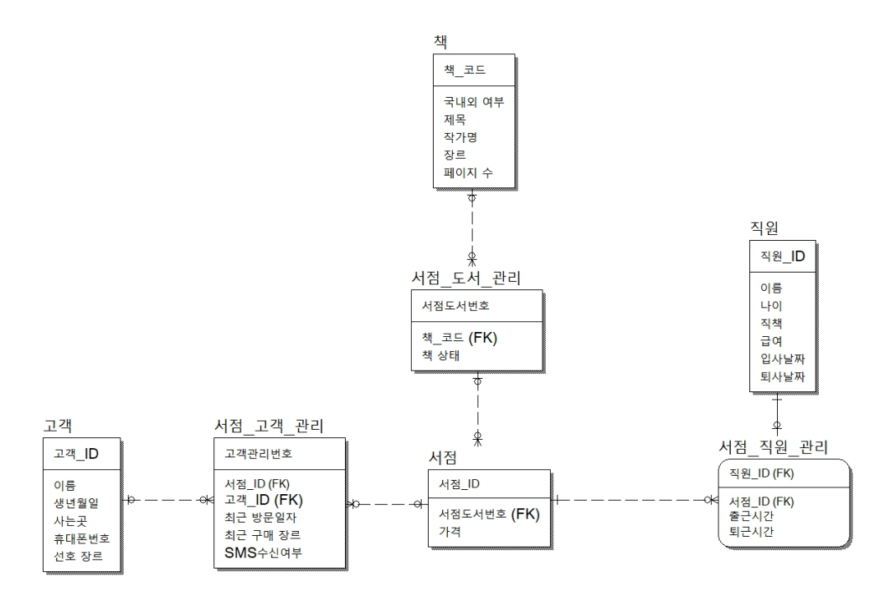

서점 DB 모델링
해당 주제를 선정한 이유?
처음 만들다보니 아무래도 주변에서 볼 수 있는 것을 주제로 선정하고 싶었고,
평소에 서점에 가는 것을 좋아하여 서점을 주제로 선정하였습니다.
느낀점
개발기간은 3일이었고, 비교적 짧은 시간이었지만 스스로 DB 모델링을 하면서 평소에는 생각하지 못했던
Technologies:
- - MySQL
- - ER-WIN